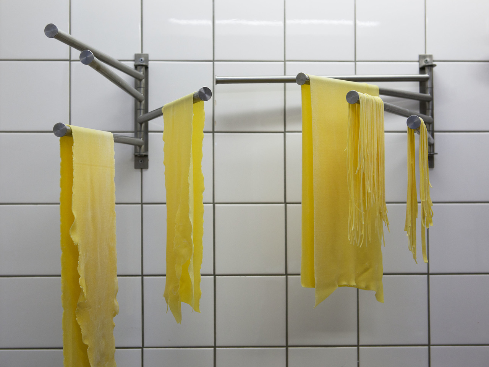
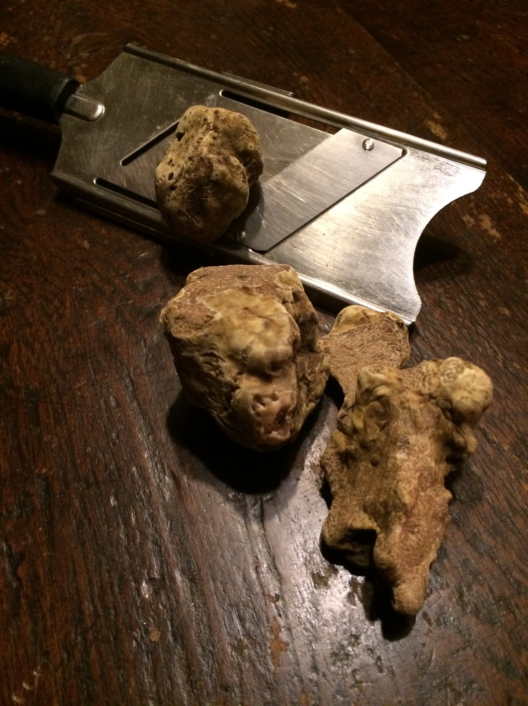
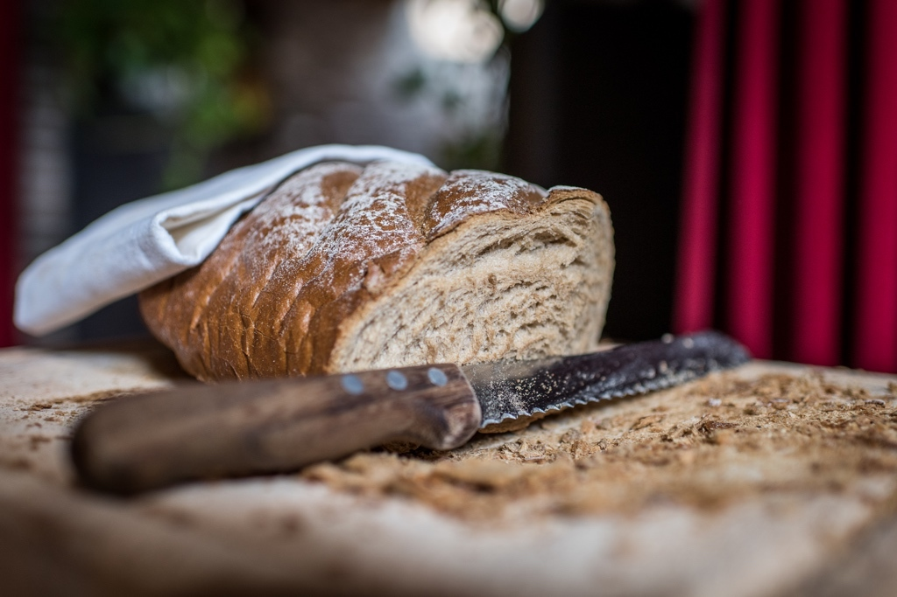
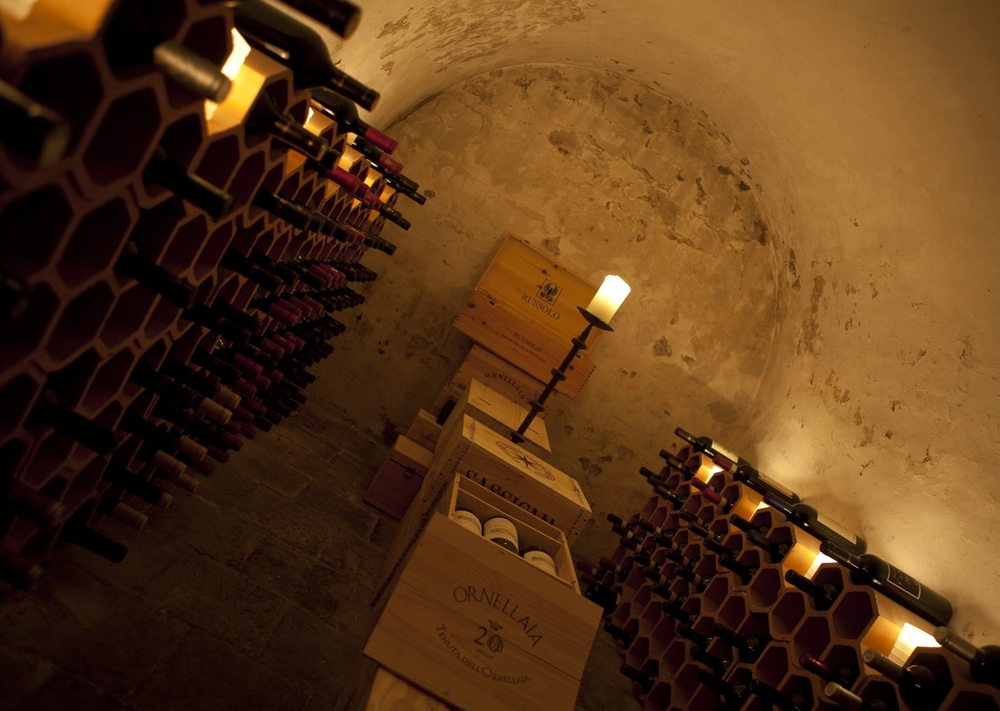
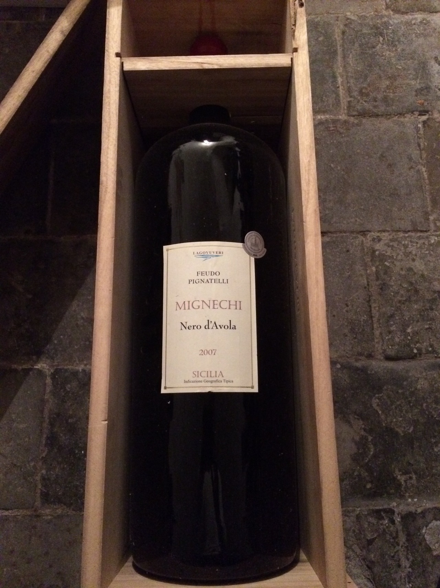
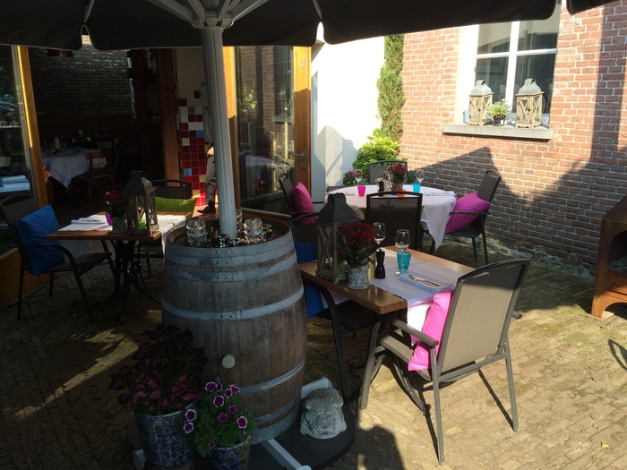

Tre piatti
3 gangen
€ 52,50
Disposizione del vino 3 glazen wijn € 27,00
Markt 2a, Sint-Oedenrode
Pure Italiaanse keuken, een huiselijke en ongedwongen sfeer en een eigenaar die zijn wijnen zelf in Italië gaat ophalen.
Voortaan ook op maandag open voor diner, vanaf 18:00 uur
Al ruim 25 jaar is Freek van den Elsen eigenaar van een klein stukje Italië middenin Sint-Oedenrode: Restaurant Osteria. Samen met zijn brigade runt hij het restaurant met een enorme passie voor wijn en Italiaans eten.
Als gast voelt u zich er meteen op uw gemak, want in Osteria heerst een huiselijke en ongedwongen sfeer. Het eten is van een ongekend hoge kwaliteit. ‘Puur’, zoals Freek het zelf noemt, want zo kun je volgens hem het Italiaanse eten het best omschrijven.
Saluti da Osteria



La cucina
Van antipasti om te delen tot huisgemaakte tiramisu. De kaart volgt het seizoen.
Voorgerechten
Antipasti-plank om te delen, met diverse salami's, San Daniele-ham, bresaola, kaas, gemarineerde groenten en gemarineerde gamba
In tempura gefrituurde champignons met Italiaanse kruiden, limoen en een Parmezaanse kaassaus
Dungesneden rundercarpaccio met truffeldressing, Parmezaanse kaas, rucola en pijnboompitten
Krokant gebakken focaccia met een mousse van gepekelde kabeljauw, compote van rode ui en aceto balsamico
Salade met ansjovis, gamba's, zwaardvis, croutons, Parmezaanse kaas, kappertjes en een ansjovismayonaise
Gerookte eendenborstfilet met een bosvruchtendressing, tomaatjes en komkommer
Dungesneden slowcooked kalfsmuis met gemarineerde paddenstoelen, Italiaanse kruidenolie en citroen
Tussengerechten
Gnocchi met kastanje, paddenstoelen en Parmezaanse kaassaus
Ravioli gevuld met pompoen, met een gorgonzola-perensaus
Gegrilde mini-octopus met een witte bonencrème, gegrilde radijs en zwarte olijven
Huisgemaakte brede lintpasta met een stoof van eend, geserveerd met blauwe druiven
Risotto met radicchio, gorgonzola en gebakken gamba's
Hoofdgerechten
Gegratineerde portobello gevuld met een paddenstoelen-truffelrisotto
Vangst van de dag met wisselende garnituur
Gegrilde tonijnsteak met tomaat, olijven en kappertjes, geserveerd met een peterselieolie
Parelhoen omwikkeld met ham en salie op geroosterde pompoen, met een witte bonencrème en een marsalasaus
Rosé gebraden tamme eendenborst met gebakken knolselderij en een saus van zoethout en amaretto
Gegrilde runder-rib-eye, geserveerd op zuurkool met een saus van roze peper
Rosé gebraden hert met een knolselderijcrème, geserveerd met een saus van blauwe bessen
Desserts
Vijf bollen room- en sorbetijs
Sinaasappel-panna cotta met sinaasappelcakejes van witte chocolade, met een bolletje mandarijnensorbetijs
Vanille-ijs met espresso, geserveerd met drie bonbons, slagroom en een glaasje crema di Ramazzotti-likeur
Huisgemaakte parfait van hazelnoot met pure chocolade-koffiemousse en gesuikerde hazelnoten
Appel-tarte tatin met pâte de fruit van appel en kaneelsuiker, met een bolletje kaneelroomijs
Huisgemaakte tiramisu met marsala, met een bolletje pure chocoladesorbetijs
Vier soorten Italiaanse kazen met verschillende garnituren
Espresso, wodka en kahlúa
Lasciatevi sorprendere
Laat de keuken kiezen. Met het wijnarrangement krijgt u bij elke gang een ruim geschonken, bijpassend glas wijn.

Il vino
Naast de Italiaanse kaart heeft Osteria een zeer breed aanbod aan voortreffelijke wijnen. Bijna letterlijk door de eigenaar in het land van herkomst opgehaald, want regelmatig gaat hij kijken waar de wijn vandaan komt.
Hij kan dan ook als geen ander zo passievol over wijn vertellen. Vraag er gerust naar aan tafel.
Wijnarrangementen bij de verrassingsmenu's

Bij mooi weer serveren wij het diner op het mooiste terras van Sint-Oedenrode.
Buon Natale
Wij zijn gesloten van vrijdag 25 december (eerste kerstdag) tot en met vrijdag 1 januari 2027. Rond de feestdagen zijn we wél open voor diner, op deze dagen:
| Maandag | 18:00 – 23:00 |
|---|---|
| Dinsdag | gesloten |
| Woensdag | 18:00 – 23:00 |
| Donderdag | 18:00 – 23:00 |
| Vrijdag | 18:00 – 01:00 |
| Zaterdag | 18:00 – 01:00 |
| Zondag | 17:30 – 23:00 |
Rond Kerst en Oud & Nieuw gelden aangepaste tijden.
Bel ons op 0413 490 304, of laat hieronder weten wanneer u wilt komen.